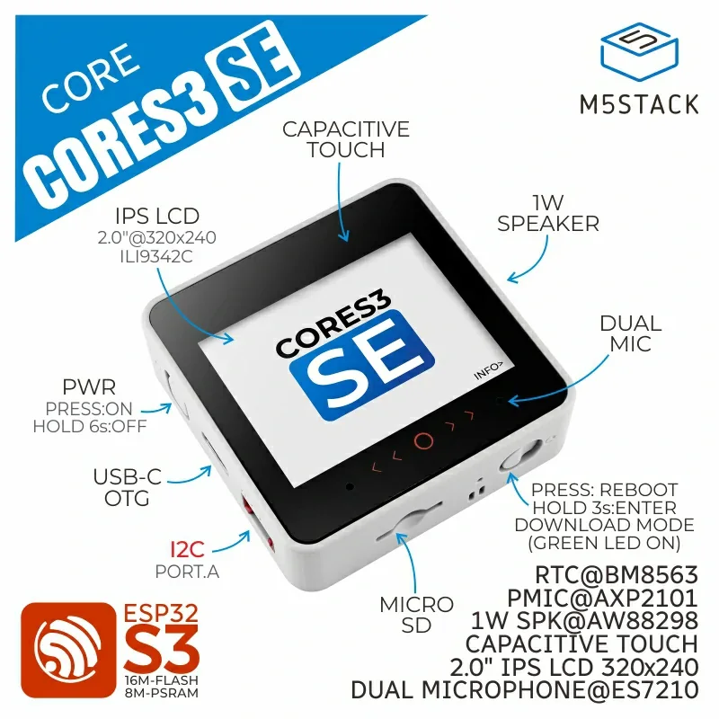

CoreS3 SE
M5Stack · M5Stack CoreS3 SE – lightweight CoreS3 without camera/IMU
CoreS3 SE is a 2.0" 320x240 IPS Capacitive touch ESP32 display board by M5Stack based on the ESP32-S3 with 16MB flash, 8MB Quad PSRAM.
Features, ports & interfaces
- SPI display
- Capacitive touch (FT6336U)
- 8 MB PSRAM – Quad
- 16 MB flash
- Wi-Fi 4 (802.11 b/g/n, 2.4 GHz) – version from the ESP32-S3 datasheet
- Bluetooth 5 (LE) – version from the ESP32-S3 datasheet
- USB-C (USB OTG, USB-Serial/JTAG)
- Speaker: 1 W, AW88298 16-bit I2S amplifier
- Microphone: 2x microphone (ES7210)
- RTC: BM8563
Specifications
| Parameter | Value | Source |
|---|---|---|
| Screen size | 2.0" | source |
| Resolution | 320x240 | source |
| Panel | IPS | source |
| Shape | Rectangular | |
| Display interface | SPI | source |
| Display driver | ILI9342C | source |
| Touch | Capacitive | source |
| Touch controller | FT6336U | source |
| MCU / SoC | ESP32-S3 (dual-core LX7, 240 MHz) | source |
| MCU family | ESP32-S3 | source |
| CPU frequency | 240 MHz | source |
| Flash | 16MB | source |
| PSRAM | 8MB Quad | source |
| Wi-Fi | 2.4 GHz Wi-Fi | source |
| Bluetooth | Bluetooth LE (SoC radio; not listed separately in the vendor spec table) | source |
| USB | USB Type-C (USB OTG, USB Serial/JTAG) | source |
| SKU | K128-SE | source |
| Category | M5Stack (all-in-one controllers) | |
| Audio | ES7210 codec, dual microphone input | source |
| Microphone | 2x microphone (ES7210) | source |
| Power management | AXP2101 | source |
| RTC | BM8563 | source |
| Speaker interface | 1 W, AW88298 16-bit I2S amplifier | source |
| Vendor | M5Stack |
Official links & documentation
Files
Offline copies are available on the interactive page.
- Sch_M5_CoreS3_SE_v1.0.pdf – original